Korinya ("roots" in English), began as a family band in 2005. It has since developed into a young, contemporary folk band that presents Ukrainian folk music with a fresh, grassroots sound. Hear the voices of the steppes, the cheerful melody of the sopilka, and the soulful fiddle-playing that tie this band to their roots. Members include Sana Shepko (violin), Zoya Shepko (accordion), Alina Kuzma (vocals), Maria Pleshkevich (percussion), Stefan Shepko (sopilka), and Nick Hladio (double bass).
The band has performed several times in Ukraine, including a charity tour in 2010, where they traveled to orphanages and convalescent homes. This trip was followed by another in 2012, where Korinya won first place at the Boyko Festival.
Korinya performs at festivals, weddings and other events across Canada and the US, including the Bloor West Village Toronto Ukrainian Festival, the Clearwater's Great Hudson River Revival, and the Capital Ukrainian Festival in Ottawa. Korinya has performed at LaMama Experimental Theatre of New York City, and has been the featured party band at Kosa Kolektiv's Malanka in Toronto as well as the Cleveland Malanka in Ohio.
As of 2018, the group has two full-length albums: Korinya (2013), and Zemlya (2017).
You can find Korinya's music on CD Baby, Bandcamp, Spotify and iTunes.
Latest album release
Our band’s members were all born into a thriving Ukrainian diaspora community. Most of us were raised on tapes of the world music trend of the 90s, featuring many Klezmer, Celtic, Slavic, and Roma artists, and on the homophonic music we’d sing in church. While there are many Ukrainian community choirs and heavily-electronic party bands, the acoustic, ‘village flavor’ that many associate with Ukraine’s folk music is largely missing outside the country’s borders. Korinya began in 2005 as a family band, with the idea to marry acoustic instruments, folk and fun together in the way that would have been enjoyed by our community and its ancestors. Although we now perform songs from other musical traditions and are inspired by modern musicians and our classical training, Korinya remains ‘Korinya Ukrainian Folk Band’ as a testament to the in-depth cultural understanding it has of the pieces we rejuvenate with our own sound.